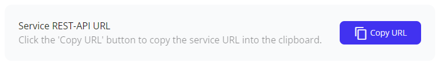

Integration of a sorbay_risk service
This guide will show you how to integrate your login service with the sorbay_risk service.
Make sure you first created a sorbay_risk service.
Configure the sorbay_risk service
Navigate to the "Settings" of your service, then go to the "Configuration" tab.
Configure at least one API key. It will be needed in your login service for REST calls to the sorbay_risk service.
Configure your login service
For simplicity, let's assume that your login service provides users who want to log in with a simple login form with userid and password fields, plus has a hidden "token" field:
- userid: Text field
- password: Password field
- token: Hidden field
That might of course be different in practice, but what is crucial is that there should be a means to at least weakly authenticate a user (more precisely the userid) before using the sorbay_risk service.
To get the base URL of your sorbay_risk service, you will find in the "General" settings tab a button to copy the URL of the REST-API.

The base URL of the sorbay_risk service depends on the service ID and has the notation https://<SERVICE_ID>.cloud.sorbay.com.
In this guide we assume the base URL is https://riskid.cloud.sorbay.com/ below.
Authentication Flow
Here is the typical flow of requests and responses in case of a successful login:
sequenceDiagram
autonumber
actor client as client/browser
participant login as your login service
participant risk as sorbay_risk service
client ->> login: GET login page
login -->> client: login page<br>(with initial js)
client ->> risk: GET js for client
risk -->> client: js for client
client ->> risk: js opens WebSocket at /token
risk -->> client: token via websocket (opaque)
client ->> login: Login POST<br>(login userid + password + token)
login ->> risk: REST call /rest/risk<br>(opaque userid + token)
risk -->> login: risk score
login -->> client : login ok or require<br>further authentication
login --> client : (opt. further authentication)
login ->> risk: REST call /rest/loginok<br>(opaque userid + token)
risk -->> login: ok1. GET login page
A user goes to the login location in their browser/client (directly or redirected when trying to access a protected application).
2. Login page (with initial js)
Your login service sends back a login page with form fields for userid and password, plus a hidden field named token, and the following JavaScript:
<script>
function sorbaySetTokenInForm(token) {
console.log('setting token in form to: ' + token);
document.getElementById('token').value = token;
}
function sorbayGetSetToken() {
const baseUrl = 'https://riskid.cloud.sorbay.com';
import(baseUrl + '/resources/sorbay-risk.min.js')
.catch(e => { throw new Error('client-error: import ' + baseUrl + '/resources/sorbay-risk.min.js failed: ' + e); })
.then(js => js.sorbayGetToken(baseUrl, sorbaySetTokenInForm))
.catch(e => e.message.startsWith('client-error: ') ? e.message : 'client-error: sorbayGetToken() failed: ' + e);
}
sorbayGetSetToken();
</script>
3. GET js for client
The above JavaScript is run immediately (while the user is free to enter username and password in parallel). It fetches further JavaScript from the sorbay_risk service in order to collect/measure client attributes.
4. js for client
The received JavaScript also runs immediately.
5. js opens WebSocket at /token
The JavaScript opens a WebSocket to wss://riskid.cloud.sorbay.com/token.
Note: The API key is not used here. Usage of the API key is restricted to the REST calls of your login service described further below. The API key should never be given/passed to the client.
6. token (opaque)
Within the websocket channel additional client attributes are determined. As last action before closing the websocket connection, the sorbay_risk service returns the opaque token. The token is required to calculate the final risk score in the next steps. The token is only valid for a certain period of time and can be used only once to prevent e.g. replay attacks.
In the JavaScript above, the token is written to the hidden token field.
7. Login POST (login userid + password + token)
The user enters login userid and password and submits them, posting them to your login service along with the token.
Ideally, the submit button would only become active once the token had been obtained.
8. REST call /rest/risk (opaque userid + token)
The login service validates userid/password and, if correct, makes a REST call to the https://riskid.cloud.sorbay.com/rest/risk
location on the sorbay_risk service, passing an opaque userid and the token, plus the API key as X-API-Key HTTP request header.
opaque userid
The opaque userid should be unique and unchanging per user, but it should not be possible to derive it from login userid and/or API-Key. Formally, the opaque userid is limited to max 128 characters, where upper and lower case letters and numbers are allowed, as well as '+/=-_', i.e. covers hex-, base64- and base64url-encodings. Technical approaches for the opaque userid would include a randomly generated userid that is stored along other user data somewhere where only the login service has access, or an HMAC based on a secret key that only the login service knows.
9. risk score
The sorbay_risk service validated the token before calculating the risk score and returns it.
Your login service receives the risk score and is free what to do based on its value.
For example, if the risk score is lower than 0.4, a second factor authentication (TOTP, etc.) could be skipped. Or if the risk score is above a certain value, an email could be sent to the user to inform of the login attempt "from a new location/client".
It's not recommended to block a login attempt entirely based on the risk score. Depending on the feature changes it could prevent legitimate user from accessing your service.
10. login ok or require further authentication
Your login service grants access to the user if the risk score was deemed low enough, otherwise it initiates further authentication steps.
11. Optional further authentication steps
Optionally further authentication steps between client and your login service.
12. REST call /rest/loginok (opaque userid + token)
Whenever your login service decides that login with that user was successful, your login service must make a REST call
to https://riskid.cloud.sorbay.com/rest/loginok to signal that to the sorbay_risk service.
Only then does the sorbay_risk service store the gathered attributes from the latest login attempt in its datastore
for future risk score evaluations.
13. ok
The sorbay_risk service confirms that it successfully recorded the login attributes.